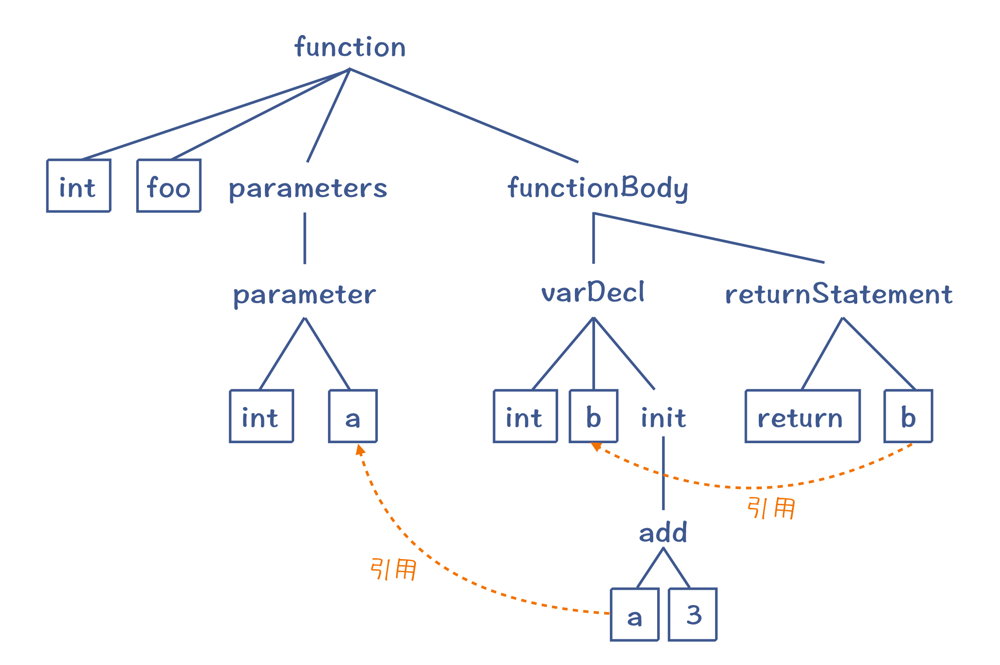
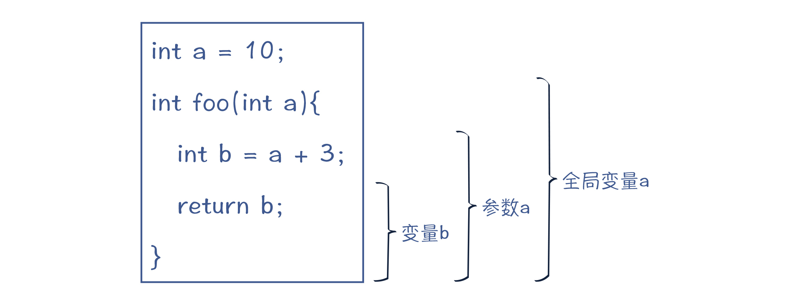
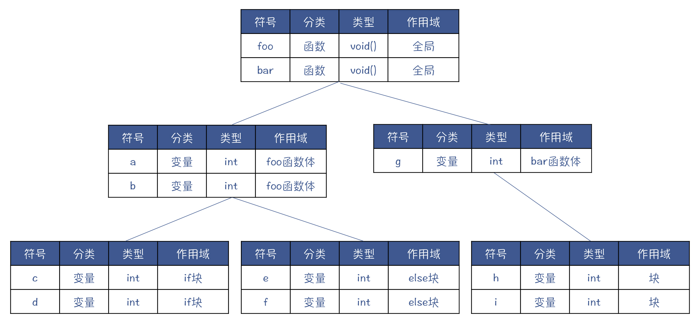
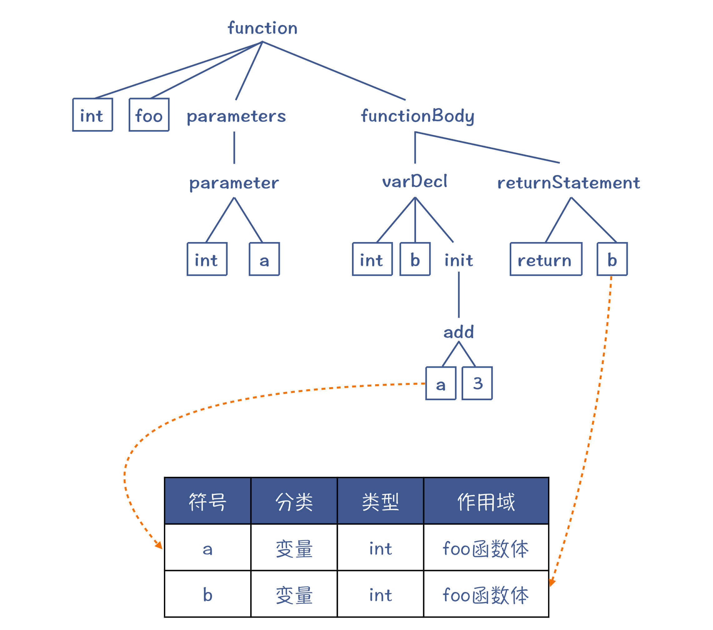
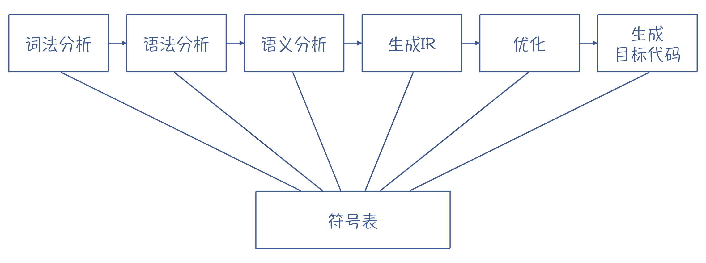
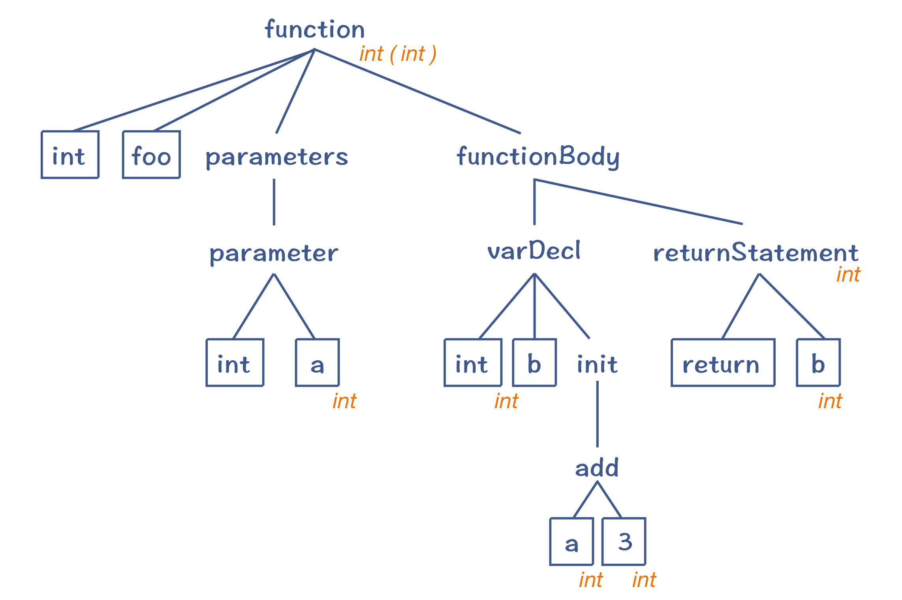
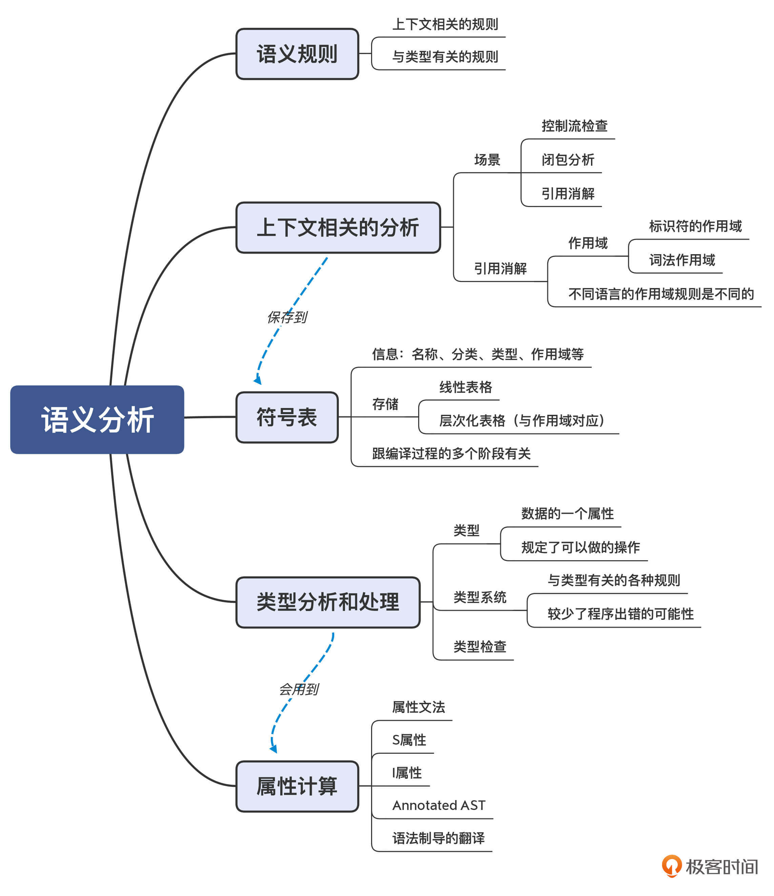

- 00 学习指南 如何学习这门编译原理实战课？.md
- 00 开篇词 在真实世界的编译器中游历.md
- 01 编译的全过程都悄悄做了哪些事情？.md
- 02 词法分析：用两种方式构造有限自动机.md
- 03 语法分析：两个基本功和两种算法思路.md
- 04 语义分析：让程序符合语义规则.md
- 05 运行时机制：程序如何运行，你有发言权.md
- 06 中间代码：不是只有一副面孔.md
- 07 代码优化：跟编译器做朋友，让你的代码飞起来.md
- 08 代码生成：如何实现机器相关的优化？.md
- 09 Java编译器（一）：手写的编译器有什么优势？.md
- 10 Java编译器（二）：语法分析之后，还要做些什么？.md
- 11 Java编译器（三）：属性分析和数据流分析.md
- 12 Java编译器（四）：去除语法糖和生成字节码.md
- 13 Java JIT编译器（一）：动手修改Graal编译器.md
- 14 Java JIT编译器（二）：Sea of Nodes为何如此强大？.md
- 15 Java JIT编译器（三）：探究内联和逃逸分析的算法原理.md
- 16 Java JIT编译器（四）：Graal的后端是如何工作的？.md
- 17 Python编译器（一）：如何用工具生成编译器？.md
- 18 Python编译器（二）：从AST到字节码.md
- 19 Python编译器（三）：运行时机制.md
- 20 JavaScript编译器（一）：V8的解析和编译过程.md
- 21 JavaScript编译器（二）：V8的解释器和优化编译器.md
- 22 Julia编译器（一）：如何让动态语言性能很高？.md
- 23 Julia编译器（二）：如何利用LLVM的优化和后端功能？.md
- 24 Go语言编译器：把它当作教科书吧.md
- 25 MySQL编译器（一）：解析一条SQL语句的执行过程.md
- 26 MySQL编译器（二）：编译技术如何帮你提升数据库性能？.md
- 27 课前导读：学习现代语言设计的正确姿势.md
- 28 前端总结：语言设计也有人机工程学.md
- 29 中端总结：不遗余力地进行代码优化.md
- 30 后端总结：充分发挥硬件的能力.md
- 31 运行时（一）：从0到语言级的虚拟化.md
- 32 运行时（二）：垃圾收集与语言的特性有关吗？.md
- 33 并发中的编译技术（一）：如何从语言层面支持线程？.md
- 34 并发中的编译技术（二）：如何从语言层面支持协程？.md
- 35 并发中的编译技术（三）：Erlang语言厉害在哪里？.md
- 36 高级特性（一）：揭秘元编程的实现机制.md
- 37 高级特性（二）：揭秘泛型编程的实现机制.md
- 38 综合实现（一）：如何实现面向对象编程？.md
- 39 综合实现（二）：如何实现函数式编程？.md
- 40 成果检验：方舟编译器的优势在哪里？.md
- 不定期加餐1 远程办公，需要你我具备什么样的素质？.md
- 不定期加餐2 学习技术的过程，其实是训练心理素质的过程.md
- 不定期加餐3 这几年，打动我的两本好书.md
- 不定期加餐4 从身边的牛人身上，我学到的一些优秀品质.md
- 不定期加餐5 借助实例，探究C++编译器的内部机制.md
- 划重点 7种编译器的核心概念与算法.md
- 期末答疑与总结 再次审视学习编译原理的作用.md
- 热点问题答疑 如何吃透7种真实的编译器？.md
- 用户故事 易昊：程序员不止有Bug和加班，还有诗和远方.md
- 知识地图 一起来复习编译技术核心概念与算法.md
- 结束语 实战是唯一标准！.md
04 语义分析：让程序符合语义规则
你好，我是宫文学。这一讲，我们进入到语义分析阶段。
对计算机程序语义的研究，是一个专门的学科。要想很简单地把它讲清楚，着实不是太容易的事情。但我们可以退而求其次，只要能直观地去理解什么是语义就可以了。语义，就是程序要表达的意思。
因为计算机最终是用来做计算的，那么理解程序表达的意思，就是要知道让计算机去执行什么计算动作，这样才好翻译成目标代码。
那具体来说，语义分析要做什么工作呢？我们在第1讲中说过，每门计算机语言的标准中，都会定义很多语义规则，比如对加法运算要执行哪些操作。而在语义分析阶段，就是去检查程序是否符合这些语义规则，并为后续的编译工作收集一些语义信息，比如类型信息。
再具体一点，这些语义规则可以分为两大类。
第一类规则与上下文有关。因为我们说了，语法分析只能处理与上下文无关的工作。而与上下文有关的工作呢，自然就放到了语义分析阶段。
第二类规则与类型有关。在计算机语言中，类型是语义的重要载体。所以，语义分析阶段要处理与类型有关的工作。比如，声明新类型、类型检查、类型推断等。在做类型分析的时候，我们会用到一个工具，就是属性计算，也是需要你了解和掌握的。
补充：某些与类型有关的处理工作，还必须到运行期才能去做。比如，在多态的情况，调用一个方法时，到底要采用哪个子类的实现，只有在运行时才会知道。这叫做动态绑定。
在语义分析过程中，会使用两个数据结构。一个还是AST，但我们会把语义分析时获得的一些信息标注在AST上，形成带有标注的AST。另一个是符号表，用来记录程序中声明的各种标识符，并用于后续各个编译阶段。
那今天这一讲，我就会带你看看如何完成与上下文有关的分析、与类型有关的处理，并带你认识符号表和属性计算。
首先，我们来学习如何处理与上下文有关的工作。
上下文相关的分析
那什么是与上下文有关的工作呢？在解析一个程序时，会有非常多的分析工作要结合上下文来进行。接下来，我就以控制流检查、闭包分析和引用消解这三个场景和你具体分析下。
场景1：控制流检查
像return、break和continue等语句，都与程序的控制流有关，它们必须符合控制流方面的规则。在Java这样的语言中，语义规则会规定：如果返回值不是void，那么在退出函数体之前，一定要执行一个return语句，那么就要检查所有的控制流分支，是否都以return语句结尾。
场景2：闭包分析
很多语言都支持闭包。而要正确地使用闭包，就必须在编译期知道哪些变量是自由变量。这里的自由变量是指在本函数外面定义的变量，但被这个函数中的代码所使用。这样，在运行期，编译器就会用特殊的内存管理机制来管理这些变量。所以，对闭包的分析，也是上下文敏感的。
场景3：引用消解
我们重点说一下引用消解，以及相关的作用域问题。
引用消解（Reference Resolution），有时也被称作名称消解（Name Resolution）或者标签消解（Label Resolution）。对变量名称、常量名称、函数名称、类型名称、包名称等的消解，都属于引用消解。因此，引用消解是一种非常重要的上下文相关的语义规则，我来重点讲解下。
在高级语言里，我们会做变量、函数（或方法）和类型的声明，然后在其他地方使用它们。这个时候，我们要找到定义和使用之间的正确引用关系。
我们来看一个例子。在语法分析阶段，对于“int b = a + 3”这样一条语句，无论a是否提前声明过，在语法上都是正确的。而在实际的计算机语言中，如果引用某个变量，这个变量就必须是已经声明过的。同时，当前这行代码，要处于变量a的作用域中才行。

图1：变量引用的消解
对于变量来说，为了找到正确的引用，就需要用到作用域（Scope）这个概念。在编译技术里面，作用域这个词，有两个稍微有所差异的使用场景。
作用域的第一个使用场景，指的是变量、函数等标识符可以起作用的范围。下图列出了三个变量的作用域，每个变量声明完毕以后，它的下一句就可以引用它。

图2：变量的作用域
作用域的第二个使用场景，是词法作用域（Lexical Scope），也就是程序中的不同文本区域。比如，一个语句块、参数列表、类定义的主体、函数（方法）的主体、模块主体、整个程序等。
到这里，咱们来总结下这两个使用场景。标识符和词法的作用域的差异在于：一个本地变量（标识符）的作用域，虽然属于某个词法作用域（如某个函数体），但其作用范围只是在变量声明之后的语句。而类的成员变量（标识符）的作用域，跟词法作用域是一致的，也就是整个类的范围，跟声明的位置无关。如果这个成员变量不是私有的，它的作用域还会覆盖到子类。
那具体到不同的编程语言，它们的作用域规则是不同的。比如，C语言里允许你在一个if语句块里定义一个变量，覆盖外部的变量，而Java语言就不允许这样。所以，在给Java做语义分析时，我们要检查出这种错误。
void foo(){
int a = 2;
if (...){
int a = 3; //在C语言里允许，在Java里不允许
...
}
}
在做引用消解的时候，为了更好地查找变量、类型等定义信息，编译器会使用一个辅助的数据结构：符号表。
符号表（Symbol Table）
在写程序的时候，我们会定义很多标识符，比如常量名称、变量名称、函数名称、类名称，等等。在编译器里，我们又把这些标识符叫做符号（Symbol）。用来保存这些符号的数据结构，就叫做符号表。
比如，对于变量a来说，符号表中的基本信息可以包括：
- 名称：a
- 分类：变量
- 类型：int
- 作用域：foo函数体
- 其他必要的信息。
符号表的具体实现，每个编译器可能都不同。比如，它可能是一张线性的表格，也可能是按照作用域形成的一种有层次的表格。以下面这个程序为例，它包含了两个函数，每个函数里面都定义了多个变量：
void foo(){
int a；
int b；
if (a>0){
int c;
int d;
}
else{
int e;
int f;
}
}
void bar(){
int g;
{
int h;
int i;
}
}
它的符号表可能是下面这样的，分成了多个层次，每个层次对应了一个作用域。在全局作用域，符号表里包含foo和bar两个函数。在foo函数体里，有两个变量a和b，还有两个内部块，每个块里各有两个变量。

图3：一种层次化的符号表
那针对引用消解，其实就是从符号表里查找被引用的符号的定义，如下图所示：

图4：利用符号表帮助做引用消解
更进一步地，符号表除了用于引用消解外，还可以辅助完成语义分析的其他工作。比如，在做类型检查的时候，我们可以从符号表里查找某个符号的类型，从而检查类型是否兼容。
其实，不仅仅是在语义分析阶段会用到符号表，其他的编译阶段也会用到。比如，早在词法分析阶段，你就可以为符号表建立条目；在生成IR、做优化和生成目标代码的时候，都会用到符号表里的信息。

图5：编译过程中的每个阶段，都可能会使用符号表
有的编译器，在前期做语法分析的时候，如果不依赖符号表的话，它是不可能完整地做语法分析的。甚至，除了编译阶段，在链接阶段，我们也要用到符号表。比如，在foo.c中定义了一个函数foo()，并编译成目标文件foo.o，在bar.c中使用了这个foo()函数。那么在链接的时候，链接器需要找到foo()函数的地址。为了满足这个场景，你必须在目标文件中找到foo符号的相关信息。
同样的道理，在Java的字节码文件里也需要保存符号信息，以便在加载后我们可以定位其中的类、方法和成员变量。
好了，以上就是语义分析的第一项重要工作上下文相关的分析，以及涉及的数据结构符号表的重点内容了。我们再来考察一下语义分析中第二项重要的工作：类型分析和处理。
类型分析和处理
语义分析阶段的一个重要工作就是做类型检查，现代语言还普遍增加了类型推断的能力。那什么是类型呢？
通常来说，在计算机语言里，类型是数据的一个属性，它的作用是来告诉编译器或解释器，程序可以如何使用这些数据。比如说，对于整型数据，它可能占32或者64位存储，我们可以对它做加减乘除操作。而对于字符串，它可能占很多个字节，并且通过一定的编码规则来表示字符。字符串可以做连接、查找、获取子字符串等操作，但不能像整数一样做算术运算。
一门语言的类型系统是包含了与类型有关的各种规则的一个逻辑系统。类型系统包含了一系列规则，规定了如何把类型用于变量、表达式和函数等程序元素，以及如何创建自定义类型，等等。比如，如果你定义了某个类有哪些方法，那你就只能通过调用这些方法来使用这个类，没有别的方法。这些强制规定减少了程序出错的可能性。
所以在语义分析阶段，一个重要的工作就是做类型检查。
那么，类型检查是怎样实现的呢？我们要如何做类型检查呢？
关于类型检查，编译器一般会采用属性计算的方法，来计算出每个AST节点的类型属性，然后检查它们是否匹配。
属性计算
以“int b = a+3”为例，它的AST如下图所示。编译器会计算出b节点所需的类型和init节点的实际类型，比较它们是否一致（或者可以自动转换）。
图6：“int b = a+3”对应的AST
我们首先要计算等号右边“a+3”的类型。其中，3是个整型字面量，我们可以据此把它的类型标注为整型；a是一个变量，它的类型可以从符号表中查到，也是整型。
那么“a+3”是什么类型呢？根据加法的语义，两个整型数据相加，结果仍然是整型，因此“a+3”这个表达式整体是整型的。因为init只有一个子节点（add），所以init的类型也一样是整型。
在刚才这段推理中，我们实际上是依据“a+3”的AST，从下级节点的类型计算出上级节点的类型。
那么，我们能否以同样的方法计算b节点的类型呢？答案是不可以。因为b根本没有子节点。但声明变量b的时候，有个int关键字，所以在AST中，b有一个兄弟节点，就是int关键字。根据变量声明的语义，b的类型就是int，因此它的类型是从AST的兄弟节点中获得的。
你看，同样是计算AST节点的类型，等号右边和左边的计算方法是不一样的。
实际上，我们刚才用的分析方法，就是属性计算。其中，有些属性是通过子节点计算出来的，这叫做 S属性（Synthesized Attribute，综合出来的属性），比如等号右边的类型。而另一些属性，则要根据父节点或者兄弟节点计算而来，这种属性叫做 I属性（Inherited Attribute，继承到的属性），比如等号左边的b变量的类型。
计算出来的属性，我们可以标注在AST上，这就形成我第1讲曾经提过的带有标注信息的AST，（Annotated Tree），也有人称之为Decorated Tree，或者Attributed Tree。虽然叫法有很多，但都是一个意思，都是向AST中添加了语义信息。

图7：带有标注信息的AST
属性计算的方法，就是基于语法规则，来定义一些属性计算的规则，在遍历AST的时候执行这些规则，我们就可以计算出属性值。这种基于语法规则定义的计算规则，被叫做属性文法（Attribute Grammar）。
补充：基于属性计算的方法可以做类型检查，那其实也可以做类型推断。有些现代语言在声明一个变量的时候，可以不明确指定的类型，那么它的类型就可以通过变量声明语句的右边部分推断出来。
你可能会问，属性计算的方法，除了计算类型，还可以计算什么属性呢？
根据不同语言的语义，可能有不同的属性需要计算。其实，value（值）也可以看做是一个属性，你可以给每个节点定义一个“value”属性。对表达式求值，也就是对value做属性计算，比如，“a + 3”的值，我们就可以自下而上地计算出来。这样看起来，value是一个S属性。
针对value这个属性的属性文法，你可以参考下面这个例子，在做语法解析（或先解析成AST，再遍历AST）的时候，执行方括号中的规则，我们就可以计算出AST的值了。
add1 → add2 + mul [ add1.value = add2.value + mul.value ]
add → mul [ add.value = mul.value ]
mul1 → mul2 * primary [ mul1.value = mul2.value * primary.value ]
mul → primary [ mul.value = primary.value ]
primary → ( add ) [ primary.value = add.value ]
primary → integer [ primary.value = strToInt(integer.str) ]
这种在语法规则上附加一系列动作，在解析语法的时候执行这些动作的方式，是一种编译方法，在龙书里有一个专门的名字，叫做语法制导的翻译（Syntax Directed Translation，SDT）。使用语法制导的翻译可以做很多事情，包括做属性计算、填充符号表，以及生成IR。
课程小结
在实际的编译器中，语义分析相关的代码量往往要比词法分析和语法分析的代码量大。因为一门语言有很多语义规则，所以要做的语义分析和检查工作也很多。
并且，因为每门语言之间的差别主要都体现在语义上，所以每门语言在语义处理方面的工作差异也比较大。比如，一门语言支持闭包，另一门语言不支持；有的语言支持泛型，另一门语言不支持；一门语言的面向对象特性是基于继承实现的，而另一门语言则是基于组合实现的，等等。
不过，这没啥关系。我们主要抓住它们的共性就好了。这些共性，就是我们本讲的内容：
- 做好上下文相关的分析，比如对各种引用的消解、控制流的检查、闭包的分析等；
- 做好与类型有关的分析和处理，包括类型检查、类型推断等；
- 掌握属性计算这个工具，用于计算类型、值等属性；
- 最后，把获得的语义信息保存到符号表和AST里。
我把本讲的知识点也整理成了脑图，供你参考：

一课一思
你能否阅读你所熟悉的编程语言的标准，查看其中的语义规则，并选择一组有意思的语义规则（比如，第1讲提到的ECMAScript中加法操作符的语义规则），分析一下在语义分析阶段要针对这组语义规则做哪些处理工作？
欢迎在留言区分享你的答案，也欢迎你把今天的内容分享给更多的朋友。
参考资料
- 关于计算机程序的语义进行处理的形式化方法，你可以参考：The Formal Semantics of Programming Languages: An Introduction
- 关于数据类型、类型系统、类型理论的定义，你可以参考Wikipedia。
- 《编译原理之美》的第8讲中，有关于如何在计算机语言里实现作用域的介绍，可以加深你对作用域的理解。
© 2019 - 2023 Liangliang Lee. Powered by gin and hexo-theme-book.